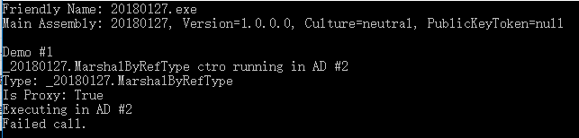
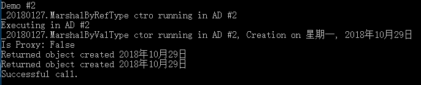
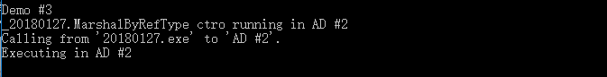

跨越AppDomain边界访问对象
1. 使用”按引用封送“进行跨AppDomain通信
代码：
1 | // 获取AppDomain引用（“调用线程”当前正在该AppDomain中执行） |
解析：
- 通过CreateDomain创建一个名叫”AD #2”的AppDomain，从当前AppDomain继承安全性和配置设置
- 将程序集加载到新的AppDomain中，通过新的AppDomain中的程序集创建MarshalByRefType的实例，并返回对MarshalByRefType的引用（由于CLR不允许一个AppDomain中的变量引用另一个AppDomain中创建的对象，所以从CreateInstanceAndUnwrap返回的对象实际不是CreateInstanceAndUnwrap类型的实例）
- 由于mbrt变量引用一个代理对象，所以会调用代理对象的SomeMethod方法。代理的实现利用代理对象中的信息字段，将调用线程从默认的AppDomain切换至新的AppDomain中，正式的SomeMethod方法返回后，会返回至代理的SomeMethod方法，后者会将线程切换回默认的AppDomain中
- 通过调用Unload方法卸指定的AppDomain，并强行执行一次垃圾回收，以释放由卸载的AppDomain中的代码创建的所有对象
- 当AppDomain试图使用代理对象调用SomeMethod方法时，会抛出一个AppDomainUnloadedException异常（虽然mbrt对象仍引用一个有效的代理对象，但代理对象不再引用一个有效的AppDomain）
输出：

2. 使用”按值封送“进行跨AppDomain通信
代码：
1 | // *** DEMO 2: 使用Marshal-by-Value进行跨AppDomain通信 *** |
解析：
- 通过CreateDomain创建一个名叫”AD #2”的AppDomain，从当前AppDomain继承安全性和配置设置
- 将程序集加载到新的AppDomain中，通过新的AppDomain中的程序集创建MarshalByRefType的实例，并返回对MarshalByRefType的引用（由于CLR不允许一个AppDomain中的变量引用另一个AppDomain中创建的对象，所以从CreateInstanceAndUnwrap返回的对象实际不是CreateInstanceAndUnwrap类型的实例）
- 代理调用MethodWithReturn方法在新的AppDomain中创建MarshByValType类型的实例，并将一个对象引用返回给默认AppDomain（由于MarshByValType类型不从MarshalByRefObject派生，所以对象不能按引用跨AppDomain边界进行封送；由于定义了Serializable特性，所以MethodWithReturn方法能按值封送对象）
- 通过调用Unload方法卸指定的AppDomain，并强行执行一次垃圾回收，以释放由卸载的AppDomain中的代码创建的所有对象
- 由于程序使用真实对象调用ToString方法，所以会调用这个方法的真实实现，线程不会再AppDomain中切换
输出：

3. 使用不可封送的类型跨AppDomain通信
代码：
1 | // *** DEMO 3: 使用不可封送的类型进行跨AppDomain通信 *** |
解析：
通过CreateDomain创建一个名叫”AD #2”的AppDomain，从当前AppDomain继承安全性和配置设置
将程序集加载到新的AppDomain中，通过新的AppDomain中的程序集创建MarshalByRefType的实例，并返回对MarshalByRefType的引用（由于CLR不允许一个AppDomain中的变量引用另一个AppDomain中创建的对象，所以从CreateInstanceAndUnwrap返回的对象实际不是CreateInstanceAndUnwrap类型的实例）
mbrt调用MethodArgAndReturn方法创建了一个NonMarshalableType对象，由于NonMarshalableType对象没有从MarshalByRefObject派生也没有用Serializable定制特性进行标记，所以MethodArgAndReturn不能按引用或按值封送对象，导致MethodArgAndReturn方法抛出一个SerializationException异常（由于CLR的优化String对象不会真的生成副本，只是传递了一个引用）
输出：
